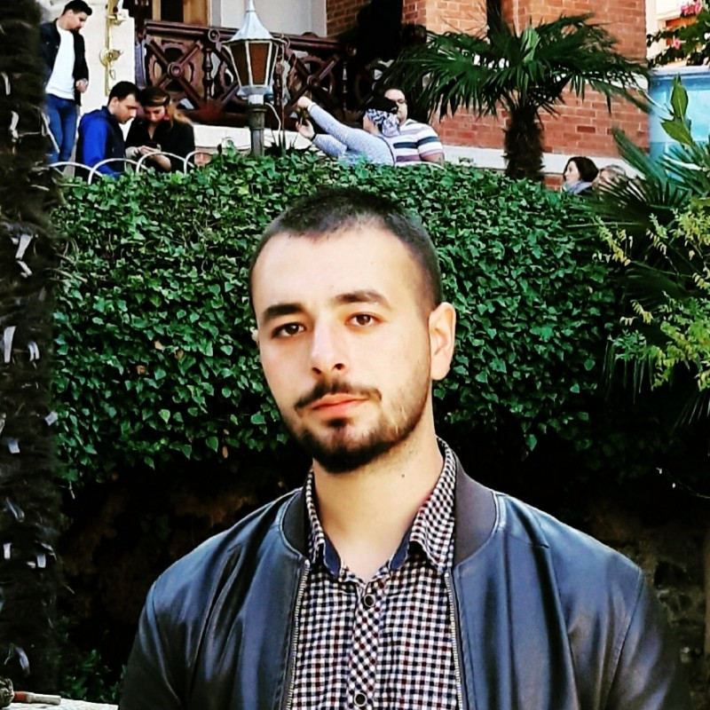

Merhaba !
Ben Hikmet Tütüncü. Bu sitede kendimle ve yaşadığım şehir ile ilgili bilgiler vereceğim.
Çanakkale ilinin Yenice ilçesinde dünyaya geldim. 2006 yılına kadar İstanbul'da yaşadıktan sonra köyümüze geri döndük.
Sonrasında eğitimime burada devam ettim. Yatılı bir ilköğretim okulundan mezun oldum. Çan Fen Lisesi'ni kazandım ve yine burada
yatılı olarak okudum. Satranç ile ilgilendim ve turnuvalara lisanslı sporcu olarak katıldım.
Sonrasında Gebze Teknik Üniversitesi Bilgisayar Mühendisliği'ni kazandım. Burada İngilizce hazırlık eğitimimi tamamladıktan sonra
bölümüme devam ettim. 2020 yılında Sakarya Üniversitesi Bilgisayar Mühendisliğine geçiş yaptım.
Ben Hikmet Tütüncü. Bu sitede kendimle ve yaşadığım şehir ile ilgili bilgiler vereceğim.
Hobilerim satranç ve fotoğraf. İkisine de aşığım diyebilirim. Aynı zamanda doğa yürüyüşü yapmaya da bayılıyorum. Çanakkale'nin Yenice ilçesi Akçakoyun köyünde oturuyorum ve burada inanılmaz bir doğa var. Kazdağları'nın eteklerinde yer alan bu köyde çektiğim bazı fotoğrafları size göstermek istiyorum.